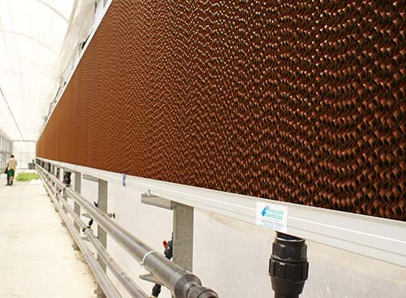

Alta Presión-Fog System
Los sistemas de nebulización de alta presión
Los sistemas de nebulización de alta presión son sistemas destinados a incrementar la humedad y conseguir la refrigeración en invernaderos y espacios donde se precisa obtener el máximo alcance y las mejores prestaciones de los sistemas de pulverización, y además ofrecer la calidad de una pulverización “seca”.
Son sistemas recomendados para obtener atmósferas con:
- Elevada humedad relativa en semilleros,
- Cámaras de germinación
- Salas de injertos
- Granja
- Locales con atmósferas controladas
- En procesos de climatización donde se precisa de la refrigeración del aire mediante un acondicionamiento evaporativo con el mayor rendimiento posible.
Un equipo de nebulización de alta presión consta de:
- Equipo de pretratamiento físico – químico del agua de alimentación.
- Equipo de presurización.
- Redes de distribución.
- Boquillas de pulverización: sistema que permite la aplicación de bajos caudales de agua a una presión elevada (50-80 bar) con unos tamaños de gota lo suficientemente pequeños para favorecer su evaporación en el aire generando vapor “seco”.
Cooling
Novedades Agrícolas puede ofrecerle las condiciones de trabajo mas adecuadas en climas cálidos, permitiéndole ampliar su ciclo de producción, asegurar la viabilidad de sus cultivos, planteles de semilleros, mejorar las condiciones de trabajo de su personal, etc.
Sistemas de paneles de refrigeración evaporativos
Los sistemas de paneles de refrigeración evaporativos son sistemas que están destinados a proveer la temperatura y la humedad más adecuada a los distintos locales y compartimentos a climatizar, todo ello mediante la renovación del aire interior con aire exterior, al que se le ha reducido su temperatura y aumentado su humedad mediante la evaporación producida a su paso por un panel con celdas de distinta inclinación y disposición.
El aire así tratado evoluciona en el local desde su entrada a su salida, evacuando la carga de calor y proporcionando las condiciones de temperatura y humedad requeridas por plantas, animales y personal.

Un equipo de paneles evaporativos dispone de
- Ventiladores: proporcionan las renovaciones del volumen de aire alojado. Suelen ser ventiladores del tipo helicoidal con persianas, funcionando en modo de extractores.
- Panel evaporativo: fabricado normalmente con hojas de celulosa plegadas en distintos ángulos, unidas conformando un panel de celdas.
- Pared húmeda de paneles evaporativos: los paneles empleados son empapados con agua. La pared dispone de una canal de empapado en su parte superior y de una canal de recogida de concentrado en su parte inferior.
Baja Presión-Fogger
El manejo de los distintos factores medioambientales que interactúan en un invernadero y que determinan en muchos casos el éxito de una buena cosecha, son una de las especialidades queNovedades Agrícolas es capaz de hacer realidad con los mejores resultados, ofreciendo a sus clientes experiencia contrastada y soluciones óptimas.
Sistemas de nebulización de baja presión
Los sistemas de nebulización de baja presión son sistemas destinados a incrementar la humedad y conseguir la refrigeración en invernaderos con el menor coste.
Son sistemas recomendados para corregir condiciones de elevado déficit hídrico durante las primeras fases de los cultivos y evitar temperaturas excesivas.
Un equipo de nebulización de baja presión dispone de:
- Equipo de presurización: electrobomba para suministrar el caudal y la presión que precisan las boquillas.
- Cabezal de filtrado.
- Redes de distribución y sectorización de cobertura.
- Boquillas de pulverización: sistema que permite la aplicación de bajos caudales de agua a una presión relativamente baja (1-4 bar) con unos tamaños de gota lo suficientemente pequeños para favorecer su evaporación en el aire.Una distribución adecuada en número, así como la posición y la orientación de cada una de las boquillas permite obtener los mejores resultados.
/Nueva carpeta/Sistema-Fog.jpg)
/Nueva carpeta/fogdet.jpg)